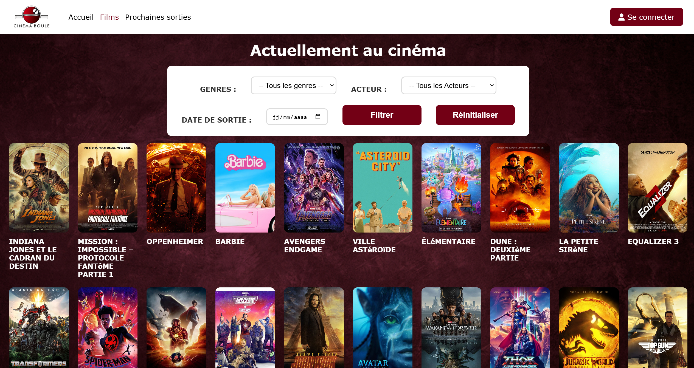
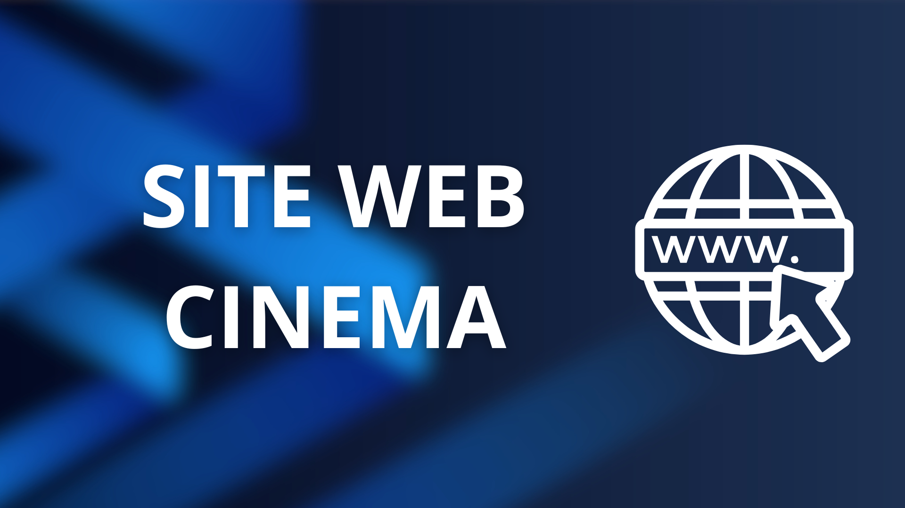
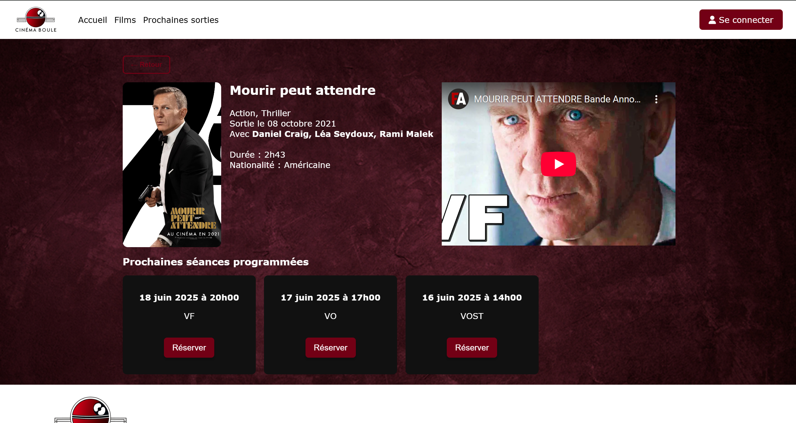
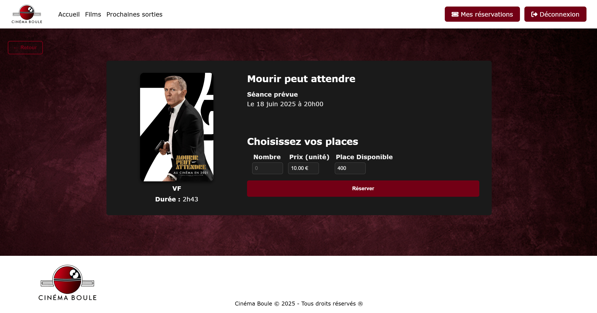
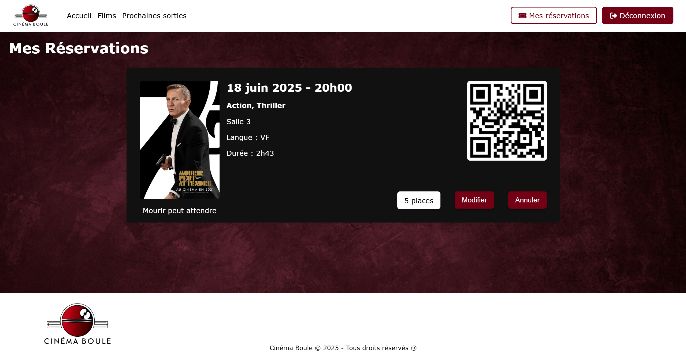

Design and development of a dynamic website for a cinema

Project Presentation
This project is part of my studies in Networks and Telecommunications at the IUT of Annecy. Completed in a team of two, its objective is to design and develop a website using PHP, HTML, and CSS, connected to a PostgreSQL database.
Project Objective
- Develop a website with an administration section to manage content and a client section for end users.
- Draft precise specifications to properly structure the project and plan the different development stages.
- Define a common graphic charter, ensuring a clear, consistent, and pleasant interface for the client.
- Produce a 100% functional site that meets the specifications.
- Strengthen our ability to work in a team on a common project, using collaborative tools like Microsoft Teams.
Project Organization
PART 1 - PROJECT ORGANIZATION
Needs Analysis and Concept Definition
To begin the project, we chose to create a website for a fictional cinema, which allowed us to clearly define the necessary functionalities and structure. We identified the main features of the site: presenting films on display, showtimes, online booking, and an administration interface to manage content and showtimes. This step served to formalize the internal specifications and guide the site's design.
Site Structure Organization
The site was divided into two main parts: Client side: public pages to view films, showtimes, and make bookings. Administration side: a secure interface for managing films, sessions, and bookings. A file tree was defined to organize the HTML, CSS, and PHP code in a clear and consistent manner.
PostgreSQL Database Design
We designed a database tailored for the cinema, including tables for: Films (title, synopsis, poster, genre, duration), Showtimes (date, time, room, capacity), Users and bookings. A conceptual schema was created to visualize the relationships between the tables and ensure data integrity.
Planning and Task Allocation
Each team member was assigned specific responsibilities: front-end development, back-end management, and database creation for each part. We used Microsoft Teams to coordinate our actions and track project progress.
PART 2 - Project Development
Project Development
The second stage of the project involved the concrete development of the cinema website, based on the structure and database defined during the organization phase. This step allowed us to move from planning to actual production, with a particular focus on the interface and functionalities.
For my part, I was personally in charge of creating the client section, which includes:
- The pages accessible to users, presenting films and showtimes.
- The implementation of user sessions, allowing visitors to log in with a username and password, ensuring secure access to their bookings and personal account.
- Dynamic integration with the database to display up-to-date information and manage bookings in real time.
This approach allowed us to create an interactive and secure site, offering users a complete and personalized experience.

Detailed page for each film, with poster, genre, and duration.

Booking page allowing users to reserve their seats.

Page allowing users to view their bookings.
Global Project Conclusion
This project to develop a website for a fictional cinema allowed us to put all the skills acquired in web programming and database management into practice. From the planning phase with the drafting of the specifications and the database design, to the concrete realization of the site, each step strengthened our ability to structure, develop, and organize a project as a team. I personally contributed to the client section, by developing the user pages and implementing a secure session system with a login and password. The site thus allows users to view films, book showtimes, and manage their account in a dynamic and secure way. This project was also an opportunity to work collaboratively using tools like Microsoft Teams, to follow a rigorous methodology, and to respect coding and design conventions, all while guaranteeing a functional and coherent result. In summary, this project was a complete experience combining technical skills, organization, and collaborative work, and constitutes a first concrete example of professional web development.